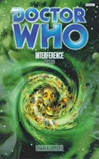

|
Interference Book 2: The Hour of the Geek
|
Continues from Interference Book 1: Shock Tactic BASIC PLOT DOCTOR COMPANIONS With the Third Doctor: Sarah Jane Smith. MATERIALISATION CIRCUIT Pg 75 The Doctor's cell in the prison in Saudi Arabia, late August 1996. Pg 121 Sam's house, Shoreditch, 1996, although we don't see what happened there until Pg 213. Pg 122 Newbury - the MoD building where the Cold was stored, 1996. Pg 125 Esher, the hotel, although no one actually leaves the ship. Pg 126 Sarah's home in Croydon, 1996. Pg 127 Anathema, 1996. Pg 150 Around Compassion's fighter, above Anathema. Pg 175 The transmitter tower on Anathema. Pg 177 At the gateway to the Cold, in the Ship, relative 101 by 4E from the transmitter tower on Anathema. Pg 184 The transmitter building again, Anathema again, 1996 again. Pg 194 Back at the gateway to the Cold again. Pg 198 Sarah Jane's home in Croydon. Again. Pg 202 The Doctor pops back to April 1963 to get a jacket, then comes back to Sarah's again. Pg 209 Anathema, 1996, for the last time. Pg 277 The Third Doctor goes to just above Dust, in hover mode. Pg 286 And then he returns Dust. Stupidly, as it turns out. PREPARATORY READING CONTINUITY REFERENCES Pg 1 "Perhaps it was the human DNA in her that did it." The absolute implication here is that I.M. Foreman's got human DNA in her system because it's the Doctor's (the Telemovie), and she and he had sex. "Once he switched his face off, and let the muscles around his mouth relax instead of giving the world the full benefit of his gurning." The Doctor has always been famous for his unlikely facial expressions, particularly in his Third and Sixth incarnations. "He looked more like a proper person than a complex space-time event." The Doctor was first referred to as a CSTE (complex space-time event) in the fabulous short story Continuity Errors, the only reason to read Decalog 3. Pg 2 "'The TARDIS knew something was going to happen,' said the Doctor." Hence it's been hanging around Earth since Dominion and, while this is a reason, it's hardly an explanation. We're still not sure what the TARDIS was sensing, although it may well have been its impending demise in The Shadows of Avalon. Note also that this 'interlude' with I.M. Foreman must happen some time before that book as well, and the Doctor later claims that it's 'mid-adventure'. "It started a few months before we got to 1996. She kept landing on Earth. Sixties London. Scandinavia. San Francisco. The Battle of the Bulge. We do have a habit of turning up on Earth, but four times in a row..." You should see the new series, mate. Took them a season and a half to leave the damned planet in that. And the references are Interference part I, Revolution Man, Dominion, Unnatural History and Autumn Mist and why oh why oh why does no one seem to realize that the Battle of the Bulge wasn't a place, but an event? It would be far more accurate to say '1940s France', particularly as he's got no idea whether I.M. Foreman's heard of the Battle of the Bulge anyway. Oh, and see Continuity Cock-Ups. Pg 3 "I think the TARDIS knew something was going to happen in 1996. Something that was going to change our lives. She was trying to work out what. She kept going back to Earth, landing near any disturbances she could find in the timeline." Yes, but this serves the interesting purpose of making Interference seem more important in retrospect than it turned out to be, simply because the Doctor tells us that it was. With cold analysis, you realise that the Doctor actually just spends most of it in prison, then pops out and helps Sam stop a really big bomb blowing up. And that's it. Par for the course for a normal adventure, but, naturally, this time written by Lawrence Miles. OK, so the Doctor got a bit tortured and Sam left, but neither of these in and of themselves should have had the TARDIS panicking quite so manically as it seems to have been. Perhaps it was because of the crossing the Third Doctor's timeline thing that it was worried, and, yes, the end of Interference part II does indeed change everything, but the Doctor doesn't actually really know that yet. So he's making up the explanation, and we're still sticking to our Shadows of Avalon finito TARDIS (how's that for style?) explanation. "But I knew Sam was going to leave the TARDIS the next time we got back to Earth." The climax, for want of a better word, of Autumn Mist. "'I didn't mean to,' protested the Doctor." This statement, the sort of thing that a petulant six-year-old might say, should be the Eighth Doctor's battle-cry. Pathetic. Pg 5 "We're past the halfway point now." Yes, and we're definitely past it because the font size in book II is noticeably larger than that in book I. "The Doctor's still trying to play chess, but the Remote are more interested in Trivial Pursuit." Sounds like a mis-quoting of the 'I'm playing poker' sequence in Battlefield, and a reference to the universe-is-my-chess-board style of the Seventh Doctor in the NAs. Pgs 5-6 "Good old reliable Sarah Jane Smith, twenty years older and twenty years more cynical than the woman the Doctor once left on Earth with nothing but a stuffed owl for company." A-ha. And now it's 1996, which means The Hand of Fear (from whence came the stuffed owl and the departure) happened in 1976. Have at you, UNIT dating! Now it all becomes clear! Unless Sarah Jane's rounding up, of course... Pg 6 "(Although we're sure she can't have changed too much; that'd spoil things)" A snide reference to the problematical aging of companions, with particular reference to how much Ace changed (Deceit) and how much Sam didn't (Seeing I etc.) "In the old days, we'd just reprise the last scene of Part One, the cliffhanger ending where time froze and the characters went into stasis. In today's world, however, things tend to be a little more complicated. For better or worse." One of the most outrageous examples of the author looking directly at the reader and talking to them that we've ever seen. Cliffhanger endings and sometimes literal freeze-frames (see, amongst others, Genesis of the Daleks, The Deadly Assassin and, for by far the finest example, Planet of Evil) abounded in the old days. As Miles says, things are a little more complicated now. One of the many points that Interference is subtly, or not-so-subtly, trying to make is how very different the world of Doctor Who is now to when it was on television. Rarely does it make that point more clearly than here. That said, the metaphor's getting a little bit thick now. Pg 7 "It was like a set out of Frankenstein." Reference to the regeneration sequence in the Telemovie, probably. Pg 9 "She'd been taken prisoner by aliens before." The earliest example is probably by the Zygons in The Bodysnatchers, and numerous times since then. Pg 10 "The way Sam had adapted to life on board the TARDIS so easily. The way she'd been trained for it by years of watching old sci-fi serials on BBC 2." She did, indeed, pick up the ropes fairly quickly - note the conclusion of The Eight Doctors. Although we always thought she'd been prepared for it by being manipulated into the Doctor's life by Faction Paradox. Maybe they arranged for the BBC2 repeats. "People whose culture was the aftershock of Rassilon's war." The battle with the Vampires, probably (State of Decay et al). Pg 12 "It looked better defined than it had done. As if someone had tried to tune the features in, and made the image a little sharper." The whole concept of remembering appears to actually be about how fans remember the show; things change and get brought down to their most basic, cliched, form. A quite literal demonstration of John Nathan-Turner's 'The memory cheats' catchphrase. Pg 14 "Of course, all of this was rendered somewhat meaningless by the fact that the Doctor had already told her the real truth about Jack the Ripper." Matrix, and he mentioned it in The Bodysnatchers as well. One does find oneself speculating about exactly what he told her: 'Er, it was me, actually. Ha ha ha ha ha... [trails off]" Pg 20 "As she pulled away from its touch, she felt a brief twinge of contempt, as if the sphere had judged her." The media sphere feels contempt for Sam. But then don't we all? "'You're going to do what Rassilon did, aren't you?' said Sam. 'You're going to open up the holes into the other universe. Let those things out.'" Implied in State of Decay and clarified and made certain in The Pit. Pg 24 "The planet hovered in the middle of the central viewing screen, a circle of pure black, lit only by the ship's visual enhancement systems. It was looking a damn sight smaller now as well." The Time Lords appear to have used a weapon that is, basically, a Tissue Compression Eliminator, but on a planetary scale. Such weapons used to be banned. Pg 25 "Back in San Francisco, all those lifetimes ago in 2002, the Faction's agent on Earth had been an ugly little boy with chronic personality problems." Unnatural History. Pg 27 "Kode lit up another cigarette, slipped it between his lips, and fell back on the bed. He wasn't sure what cigarettes actually did to him, but he'd been having urges to smoke them ever since he'd arrived on Earth." That's the Fitz-ness in him coming to the fore. By the by, Kode doesn't actually know how to light cigarettes: they generally go into your mouth before you light them, otherwise the damned things won't light. Pg 30 "I did not tell you, Mistress. I merely summarized." K9 is suddenly, and rather bizarrely, behaving like Orac from Blake's Seven. Pg 32 "'Jeremy,' said the voice of Sarah Bland. 'It's me. Sarah.'" Jeremy Fitzoliver, from The Paradise of Death and The Ghosts of N-Space. Except, of course, that he's supposed to be dead (Instruments of Darkness), so see Continuity Cock-Ups. Pg 43 "[We pan across the void, eventually focusing on two nearby objects. The first is a planet; it seems to be about the same size as Earth, but its surface is almost entirely made up of water, with one or two strips of grey-brown land at the equator. Every now and then, we see tiny specks of light glimmering across the oceans, though there's no indication of what may be causing this. [The second object, in the foreground, is a spaceship.]" It's a rip-off of the opening of Remembrance of the Daleks. "[The DOCTOR sits in the pilot's seat, fiddling with the controls for no good reason.]" The trademark Lawrence Miles contempt for the Eighth Doctor comes to the fore even in the narrative, describing, as it does, his seeming utter purposelessness. This may also, just, be a reference to something Mark Strickson once said in interview that, when another cast member had annoyed him, he'd make sure that he messed with the TARDIS console while they were speaking, just so the sound effect people would have to put beeping over their dialogue. OK, so he did say that he used to do this, but I've never actually been able to spot an example of it on-screen. Pg 46 "We are here. All of us. In the ventilation system of this vessel." Isn't it satisfying to see the Doctor's use of vent ducts used against him for once? Pg 47 "We can hurt her. Cut her. Infect her with our being." They sound like Vampires from State of Decay etc to me. "[Instantly, SAM moves. She breaks free of the CREATURE's grip, hurling herself at the wall of the airlock.]" And now it descends into a replay of episode four of The Dalek Masterplan, the one in which Katarina brutally died in an airlock when the production team discovered that she'd been a really badly designed companion. Like Sam, in many ways. Pg 49 "But in the... narrative the girl Sam sacrificed herself. An exaggeration of what she'd do in those circumstances, I'm sure." But we're not. This is the character of Sam in a nutshell: just dying to die for a cause. And, rather marvellously, the upshot of what's about to happen to the Remote, as they suddenly get all principled. Pg 50 "They seem to be perfectly ordinary human colonists, though an undue number of them are pregnant women or cute children with rag dolls." As mentioned, a lot of the point of Interference is how people react to the signals they receive, particularly from television. Here Lawrence is playing with the traditional film stance of making the panicking people seem in more danger by virtue of what they represent rather than specifically who they are. Pg 52 "You will not resist. You will not attempt to seal off the lower levels. You will be made one with us." And now the fictional invaders of Ordifica are channelling the Cybermen, even though they're still vampires; basically they are being presented in terms of monster archetypes, suggesting that, actually, all the monsters are the same. Pg 53 "DOCTOR [whisper] Sam... do it... stop them all..." Another cliche of the 'don't worry about me' self-sacrifice line, again representative of the nature or heroes and monsters and our understanding of how the two distinct types behave. Cliche also demands that - as happens further down the page - the Doctor's last word is the whispered name of his companion. The new series is actually much better at avoiding these than the old one was; particularly witness 'Oh, she knows' in The Satan Pit. Great moment, that one. Pg 55 "[There's no reply. SAM continues to fiddle with the controls, trying to make it look as though she knows what she's doing.]" Sam's acting as well, like so many companions messing with controls over the many years. Pg 56 "We control the transmitter system. We can transmit ourselves to any point in the physical universe. The planet is of no further strategic significance." And now the aliens invading Ordifica have taken on the personality and abilities of the Vardans, from The Invasion of Time and No Future. It's symbolic, though, more of Faction Paradox and the Remote than there are actually Vardans there or anything. "We will transmit ourselves to Gallifrey. To Earth. To Andromeda. We will inhabit every media network in this system." Andromeda was the home of Sabolom Glitz, and Robert Holmes liked to mention it a lot. That the names Gallifrey, Earth and Andromeda are all tied together here suggests that everything going on on Ordifica may just have had something to do with the theft of the Matrix secrets that we learned about in The Trial of a Time Lord. Actually, particularly if it was Faction Paradox that orchestrated that little event, this makes a lot of sense. The mention of Earth is stylistically what always happened in Hartnell stories; an alien threat would always, somehow, have to threaten Earth. The most outrageous example of this is in The Web Planet in which, apropos of precisely nothing, the Animus suddenly starts talking about invading Earth. Pg 60 "Ever since the Time Lords had wiped out their old homeworld." Which may or may not have been Ordifica, but it probably is. Pg 61 "'Compassion is my middle name,' Tobin told him, without a great deal of humour." The first hint of Tobin being Compassion. She is, incidentally, deliberately designed as a cliche of herself, in the way that Kode was but isn't any more. Whilst Sam was a cliche by accident, Compassion is one by design - she is actually the living embodiment of her own sarcasm and it's this, amongst other things, that makes her damn near unwritable. Pg 63 "She kept getting her Krynoids mixed up with her Pescatons." The Seeds of Doom and The Pescatons. "With a VW badge from an old Volkswagen glued to its bonnet. Someone had left a handwritten note under one of the windscreen wipers, which read, IT'S JUST NOT THE SAME, DOCTOR. GET RID OF IT". The VW met its unfortunate demise in Unnatural History. If you wanted to get all symbolic about it, it's interesting to note that the Doctor has found a different model car and stuck the old frontispiece on it in order to pretend really hard that it's the same thing. Just like he's about to do with Fitz, in fact. Pg 64 "When she'd first met the Doctor, the key - like the ship itself - had been masquerading as something far less interesting, a bog-standard twentieth-century Yale job, which had hung on a silver chain around the Doctor's neck. But, while she'd been on board the TARDIS, the old duffer had experimented with a variety of other models." An explanation for the ever-changing design of the TARDIS key, which was clearly different in Pyramids of Mars to anything we've seen before or since. "She could still remember dumping her possessions into the carrying case, taking everything from the clothes she'd brought from home to the stuffed owl the Doctor had bought for her at a jumble sale in Brighton in 1948." The Hand of Fear, and it's nice to know the provenance of the stuffed owl. That's been bugging me for years, that has. Pg 66 "TARDISes come fitted with something called temporal grace." Sarah shouldn't be quite so confident, it turns out, given that a) it doesn't work now and b) it's been on and off for years. He was supposed to be fixing it around Arc of Infinity. Pg 67 "Imagined that one of his former regenerations was hovering over him in the cell." Normally, the Doctor would use the term 'incarnations', but he's confused and tortured now. Not wrong, but odd, certainly. Pg 71 "Now that was curious. Kode had said 'we'. Suggesting that the mission to rescue the Doctor was now his first concern, as well. Presumably, he was starting to act on the signals the TARDIS was giving him." Foreshadowing (pardon the pun) of what will happen to Compassion in The Shadows of Avalon. "The result of some terrible mind-probe experiment or other." The Five Doctors. Pg 72 "One: the Doctor kept a library just for the sake of it, for the sheer love of collecting things, the same impulse that made fans of science-fiction TV shows buy the videos even though they'd taped exactly the same programmes off the television." Don't know about you, but that doesn't seem at all weird to us. Don't know what Sarah's on about. It's possible that this is a reference to Doctor Who fandom. Pg 73 "She hummed to herself as she drove, an extract from her great unfinished opus Concerto for People Running Up and Down Corridors." Erm, it's so difficult to put a particular story to this reference; so much of Interference refers to Doctor Who concepts in general, as opposed to specific moments. Suffice it to say that the concept of the Doctor and companion(s) running endlessly up and down corridors is not a completely alien one even now, and was very familiar to us back then. "Even those little 'incidents' in '83 and '95 hadn't ruffled her, much." The Five Doctors and Downtime. "if you'd spent so much of your life running face first into big fuzzy monsters." Actually, most of the fuzzy ones (and we're thinking of the Mandrels and the Taran Beast here) happened after Sarah Jane. Pgs 73-74 "You could never get him out of your life, Sarah reminded herself." As we saw in School Reunion. Pg 74 "When she'd started travelling with the Doctor, he'd insisted on giving her an injection. A universal vaccine, he'd said." The Seventh Doctor certainly messed with Ace's body chemistry in the NAs. There's an implication here that Sarah can't get pregnant, much as it appeared that Ace couldn't, not for lack of her trying to do so with everything in trousers that she could get her hands (or any other part of her body) on. Chris Cwej also admitted that he was sterile in Dead Romance. Alarmingly, the Doctor gave Rose one (a vaccination, that is) in The End of the World. "Sarah hadn't spent a day sick since, apart from the time the Cybermen had pumped that venom into her system." Revenge of the Cybermen. The implication is that the vaccination makes you immune to bacteria and viruses, but not poison. "Besides, she'd heard him say there weren't any children on Gallifrey, not real ones." Cat's Cradle: Time's Crucible and Lungbarrow, although it got less of a problem after the latter story. Well, at least until the planet got blown up, of course. Pg 75 "She'd imagined herself giving birth to horrible mutant things. Blobs of living matter that couldn't survive on their own, that had to be wrapped in metal shells just to live through childhood." Images drawn from Genesis of the Daleks. Pg 76 "A grand hall in which several thousand volumes of the TARDIS instruction manual were kept. Sarah seemed to remember the Doctor having a much smaller version, one big hardbacked book, but presumably that had just been the Time Lord equivalent of one of those 'read this booklet first' manuals you got at the top of the box when you bought a new computer." Not sure when Sarah saw it, but we got to see it in Vengeance on Varos. Pg 77 "On... what had that planet been called? Ha'olam." Seeing I. "Three days, and he'd fallen further than he had on Ha'olam. This, he reminded himself, was the hard edge of history, not part of anybody's equation." Lawrence Miles has made very public his dislike of the OrmanBlum perfect world, where everything works in terms of authorial and societal convenience rather than in a way that actually coincides with what the reality of the situation might be, and the world is perfect because they say it is. That Miles tips the Doctor further over the edge when he's actually exposed to a real prison, rather than a sanitised OrmanBlum version is a comparison between their 'fantasy' Doctor Who books and his 'reality' ones. Prison, and torture, Miles reminds us, isn't funny or clever; it's designed to destroy you, mentally, physically and emotionally. And even the Doctor is not immune. Pg 79 The chapter subtitle is 'could you then kill that child? Well, yes, actually' which is clearly drawn from Genesis of the Daleks. And you knew that. "We're evidently looking at a nursery, possibly part of a medical complex. The room is large, and incubators are arranged at regular intervals across the floor." This is a deliberate reversal of a very similar scene in Seeing I. In that novel, Sam had to rescue a baby; this time she has to kill one. It's that 'real' versus 'ideal' that we mentioned just above. Pg 80 "It's no worse than the way we do things back on Gallifrey." Possibly a lie, given that this is a fictional Doctor, but may have reference to Cat's Cradle: Time's Crucible and Lungbarrow. We also see a looming happen in Human Nature (the NA, not the new series episode). Pg 81 "They'll turn the whole of future history into one big television show, with themselves in the producer's chair." Thank you, Lawrence. Could you possibly hit us over the head a little harder with your metaphor about television please? "Listen. If someone who knew the future pointed out a child to you, and told you that child would grow up to be totally evil - to be a ruthless dictator, who'd destroy millions of lives - could you then kill that child?" Genesis of the Daleks, word for word. Pg 83 "Faster than we can comfortably follow, he reaches into his pocket, and draws out the sonic screwdriver." Almost like a flash-forward to the new series and the panacea that the sonic screwdriver has become. Pg 84 "Drop the sonic device, Time Lord." The Visitation. Pg 86 "We see the baby again, his face perfectly peaceful, not aware that anything's going on." Sam has to kill a baby in a rather glorious parody. It's emotive imagery for the sake of being emotive imagery, right down to the baby's 'peaceful' face. Similar things occur everywhere, of course, but most insidiously, in my opinion, on the British Criminal Records Bureau website where you have to sign up to get clearance to work with children. Now, don't get us wrong: the Cloister Library and its authors consider that there is little more evil done in the world than can be done to children by unscrupulous adults, and support any measure which protects them. What I object to here are all the cute pictures of little girls putting on their ballet shoes, an image which is there entirely and only for emotional impact rather than for any constructive reason whatsoever. Hence we love Miles' rather wonderful subversion of it. Pg 87 "You can't change time, not the way the Doctor was trying to do it." Actually, Genesis of the Daleks suggests that this isn't true; it's just the Doctor chooses not to go this way about it, unless, of course, he's appearing in an NA. But since this is drawn from Sam's memories, it's possible that it's her belief we're having interpreted for us, not the facts of the matter at all. Pg 88 "A baby is more important than a planet, because a baby symbolises everything pure and innocent about humanity." I had to mention this, because it's very similar to something my good friend Robert once said, about why child murderers are so much more terrifying than adult ones. "Greyhound X to Greyhound Y." UNIT call-signs. X and Y may relate to male and female chromosomes or the generic names for the two particles designed to hit each other in a particle accelerator. Or I may just be seeing things by now. Pg 89 "Once you've done that, use the time ring to take you back to the TARDIS." Ah, the universal convenience that is a time ring. We saw them first in Genesis of the Daleks, and then Professor Bernice Summerfield got some given to her as wedding presents way back in Happy Endings. Pg 90 "The living thing is a dog. A beagle, probably only a couple of weeks old." And, inevitably, the parody reaches its ludicrous conclusion; Sam has to wipe out cute puppies. Fantastic. Pg 94 "The Cold is the only thing that matters. Nothing can stop us now." Sam has infected the Remote with principles; they'll die for their beliefs. Excellent; it turns out that Sam is the ultimate evil. Pg 96 "According to the stories, one of the first things Faction Paradox did when it 'colonised' a planet was to tap into the planet's ley lines." In Unnatural History, the ley lines were in fact the Doctor's biodata strung out in a mesh. It seems unlikely that this is what the Faction are referring to here, though. Pg 97 "The last four years had been wasted in the company of the Faction and the Faction's followers. That was a huge chunk of his life he'd lost, a huge chunk of himself he'd given up to the cult. Even if he made it back to the Doctor, then so what? He'd never be the 'complete' Fitz again, the person who'd joined the TARDIS crew." At least actions have consequences; compare this to the years in China in Revolution Man, the net consequences of which appeared to be the fact that Fitz had to grow out a really severe haircut. "It didn't matter how much was real, and how much was interference." Interference probably wins the award for the most time a title can be mentioned in the bulk of the narrative. Of course, it's easier to do with a one-word title than it would be with, say, Return of the Living Dad, but Interference actually manages it more times than Dalek does. Oh, by the by, this sentence sums up the entire contents of the pair of books. Pg 101 "The cupboard under the stairs had been dark. But that darkness had grown a face, and that face was the gas mask." You can't argue that a World War II gas mask is a great image of dehumanisation, as The Empty Child clearly proved. Pg 109 "...talking about setting up a colony on Earth, once the plan's been seen through." A Faction/Remote colony on Earth could, of course, be the Enemy in some prototype form or another, since the Enemy come from Earth, allegedly. Well, at least until The Ancestor Cell, they do. It would be a delicious paradox. Sadly, it's probably not, as the real plan appears to be to destroy Earth, so what the Remote think is probably just Faction propaganda. Pg 110 "Perhaps, when the darkness got particularly old and thick, things started hatching out of it." Doctor Who in a nutshell and another brief reminiscence of that speech in The Moonbase. Pg 111 "It was a Drahvidian battleskimmer." Galaxy Four. Pg 115 It's at this point that the Doctor is finally released from the captivity that he's been in for the whole of the first volume and the first hundred or so pages of this one. Which is all very well, but begs the question how exactly is he reporting it back to I.M. Foreman so very clearly in his own future? Now, some of it he might have been able to pick up from hearsay, but he barely sees Sarah or Sam at the end of the story before he's off into the distant yonder again, whilst what happens to Fitz is unlikely to have been clearly communicated by Father Kreiner at any point and so must be wild speculation at best. Kode has his memories blanked when he's remembered back into Fitz, so he's no help, and the person who probably knows the most - Compassion - doesn't exactly seem like the person who'll sit down by the TARDIS fireside and fill in the gaps in what the Doctor doesn't know because he was too busy being tortured. Yes, it's all very well the first volume telling us that the Doctor's only giving I.M. Foreman the edited version (Pg 9) while we as reader get the full story, but it must have been edited almost out of existence if he's only reporting what he himself experienced. So, while the framing device is very clever and all, we are rather left wondering what, exactly, he actually says to her. "He recalled being vaguely surprised that the console room wasn't shiny and white. For some reason, he'd been expecting roundels." Probably because he'd recently crossed over with the Third Doctor, but equally probably because, like Terrance Dicks before him in The Eight Doctors, it turns out that Lawrence Miles quite misses the way the TARDIS used to be as well. Bless. Mention of Rassilon and Omega. Pg 116 "'No, no, no,' he told the Morestrans, as their civilisation collapsed in front of their eyes. 'I said, why don't you try harnessing the kinetic power of gannets?'" Planet of Evil and Zeta Major. Pg 117 "It's made from an intelligent memory polymer. Quite clever, really. More the Master's kind of thing than mine, though. Zoe picked it up from the Grand Festival of Zymymys Midamor." See The Mind of Evil amongst others. And that was a mention of Zoe, in case you missed it. Pg 119 "He stopped off in the wardrobe room - in one of the wardrobe rooms" An explanation for the different ones we've seen over time, specifically in The Twin Dilemma and Time and the Rani. "Time being relative, he could have spent whole months in the vortex before going back to Earth to rescue Sam, but that felt... wrong." Reference to the third Doctor spending ten years dying in the TARDIS between Metebelis Three and returning to Earth at the end of Planet of the Spiders, as posited by Love and War. And quite a clever one at that, given this novel's conclusion. Pg 120 "When the Doctor walked into the room, the boy was flipping through an old hardbacked novel, which had been resting on a chair in a quiet corner of the room for about, oh, seven years now. 'The Time Machine?' asked Kode. 'I try to read it at least once in every regeneration,' the Doctor told him. 'After all, it's where everything started.'" We saw him reading this in the opening moments of the Telemovie. Seven years is about right, allowing for the three year gap (Vampire Science) and the two and a half years on Ha'olam (Seeing I). And the 'where everything started' line is a reference to the fact that the programme itself owes its origins to the work of H.G. Wells, particularly this book and The War of the Worlds, as well as being a mis-quote of the final line of The Five Doctors. Pg 125 "I'm afraid he is. As a matter of fact, I've tried the same trick myself. The difference is, I think Kode really means it." The Doctor threatened to kill himself to get what he wanted in the Telemovie. "'That's insane,' said Sarah. 'That's principles,' said Kode." That's Sam, said Anthony and Robert. Pg 126 "'I seem to remember hearing you'd moved away from London.' 'I did,' Sarah said. She was sitting huddled up on a beanbag, K9 by her side. 'But I got fed up, so I moved back again.'" K9 and Company, and at least vaguely consistent with what we learn in School Reunion. "However, extraneous non-Gallifreyan DNA suggests -" K9 has spotted the Doctor's half-human side (the Telemovie), which appears to be a new thing here. As has often been suspected, he's only half-human in his Eighth incarnation. "Oh, that's nothing. You should see the mark-four version" of K9. We eventually do, in School Reunion. Nice to know that he'd already built it by now. Not that it appears in The Gallifrey Chronicles, so perhaps he's talking about a design rather than an actual rebuilt K9. Pg 127 "'But they've got an Ogron,' Sarah noted. 'And that. But it isn't the first one to get stranded on Earth.'" Undoubtedly there were some left behind in Day of the Daleks. "By the way, there are two Saudi soldiers on board the TARDIS. I locked them in a cupboard near the billiard room." They actually, it turns out, never get released. Let's hope they don't run into the Cyberman still wondering the corridors in the wake of Attack of the Cybermen, shall we? Pg 128 "'The TARDIS can be a little erratic,' the Doctor lied." Yeah, we always thought he was lying about that too. Pg 131 "He was sterile, apparently." Since the Remote appear to be symbolic of television addicts, and perhaps sci-fi fans in particular, it's possible that this is a cruel reference to the fact that so few of them are likely to have children. "Fitz knew the biodata had been copied from the files of the Time Lords themselves, so presumably the information had been corrupted somewhere along the line." Actually, Fitz is wrong. Most of the Time Lord biodata stuff does indeed appear to have the effect of making you sterile as - and we've mentioned this before - happened to Chris Cwej in Dead Romance. And the fact that this information was stolen from Time Lord files adds credence to the idea that something about the stolen Matrix files in The Trial of a Time Lord is relevant here. Pg 133 "'I don't want to end up as a cartoon character,' Fitz murmured." That's what Genevieve Bujold, the original person cast as Kathryn Janeway in Star Trek: Voyager said when she decided to leap out of the role after a day's filming. Pg 136 Sam is in her "mid-seventies or early eighties" which is possibly another reprise of the joke about UNIT dating, but might well not be. "No. It has to be here. You wouldn't understand." Sam believes that the BBC used to stand for something good, but the youth wouldn't understand, which puts us in mind of Russell T Davies stating that he had a Dalek in his front hall (weird guy) that carol-singing children stopped recognising after a few years. If he did nothing else with his life, he said, he wanted them to know what it meant. Now there's a classic example of ambition fulfilled. Pgs 136-137 "They broadcast whole worlds from here." That'll be Doctor Who then. Pg 137 "Did I ever tell you about my father? He died the same day as the old King. The same day the Royal Family finally gave up the ghost." Presumably King Charles, possibly the one mentioned in Battlefield, although that's anachronistic now, with the benefit of hindsight. 'Did I ever tell you about my father?' sounds like Sheridan in Babylon 5, who never shut up about his Dad. "More guerrilla packs, more power blocs. In twenty years; time, we'll be on the brink of war, just like we were in the old days." Warriors of the Deep. Pg 138 Reference to Cybermen. "You know why I turned vegetarian? It wasn't a question of principles. It was just disgust. I was ten years old." This squares precisely with when Dark Sam claims to have gone vegetarian in Unnatural History. Pg 144 "She wondered how people ended up with professions, in a world where there wasn't any economy." Another knock to the perfect OrmanBlum worlds. Pg 147 "It was a hollow, maybe a hoop, maybe like one of those 'space wheels' the Americans were talking about setting up." The Wheel in Space. "The pattern was a lot like the symbol Sam's maths teacher had told her meant 'infinity'. A figure eight, inside a circle." The Eight Doctors and The Infinity Doctors. Also Sometime Never... to an extent. "But the basic shape was unmistakable. It was a shape Sam had seen all over the TARDIS, moulded into the reliefs in the Doctor's precious Cloister Room, laid out in mosaics across the floors in the deep corridors. [...] 'The Seal of Rassilon,' Sam whispered" As we saw in the Telemovie, you couldn't look at the TARDIS console room without catching a glimpse of this somewhere. We first saw it in Gallireyan context in The Deadly Assassin, and it was on Voga before that in Revenge of the Cybermen. It's also on the cover of Interference, part I. Pg 148 Reference to the Bowships, mentioned in State of Decay. "This is a modern Time Lord warship. Made for the big war." Alien Bodies et al. "That's why the Seal's the shape it is. The pattern has a kind of... I don't know. A kind of negative effect on some of the species from outside this universe. Something to do with the way their neurosystems work." An explanation for the shape of the Seal of Rassilon which, once again, ties into the vampires of State of Decay. "Four years ago - on the same occasion that Sam had first met Faction Paradox, as it happened, although she doubted it was a coincidence - the Doctor had accidentally stumbled into the future of his own species." Alien Bodies. Pg 149 "Besides, the enemy came from Earth to begin with." More trouble was caused by this line than any other in the whole of Interference, including the dodgy regeneration. Compassion, it would later turn out, and not to the benefit of the ongoing story arc, was wrong. See The Ancestor Cell. "Most of them are supposed to be getting out of this universe. Something about a universe in a bottle." Dead Romance. Pg 150 "'Time Lord years,' said Compassion. 'Same as Earth years, though. The Time Lord planet's got the same kind of cycle as Earth. Don't know if that means anything." Neither do we; forty-four years and we still don't have a satisfactory answer as to why Time Lords look quite so similar to humans. "'He's back,' said Sam. 'And it's about time.'" The tag-line for the Telemovie, as if you didn't know. Pg 157 "Today, this building on the outskirts of London belongs to the British civil service, nothing more than a storage facility for government paperwork. But in the 1970s, it was the headquarters of a paramilitary task force, under the jurisdiction of the United Nations. Carol Bell was a member of the organisation at the time. She left the military for a business career in 1979." UNIT HQ, as seen in various - but not all - the Pertwee UNIT stories. Carol Bell appeared on and off from The Day of the Daleks, but turned out to have been a traitor in Face of the Enemy. Perhaps that's why she's so willing to talk to Sarah Jane now. And didn't Sarah ever sign the Official Secrets Act? Oh, and despite the amusing '70s/'80s joke, this makes it clear that the UNIT stories, or at least some of them, happened in the 1970s. "The government had got hold of some new technology, and they wanted to test out the military applications." The Pertwee era, but see The Scales of Injustice and Business Unusual for more detailed particulars. Pg 165 "She's glamorous, athletic-looking and apparently in her early thirties, with honey-blonde hair and a large amount of green eye-shadow. She's also wearing a silver catsuit." She's also Iris Wildthyme, last seen regenerating into this form in The Scarlet Empress and next to be seen in The Blue Angel. She appears to be UNIT's scientific advisor, something which is confirmed in Mad Dogs and Englishmen. Pg 166 "And now the UN's getting reports that the same cult's building Tesla machines in Australia. We're talking about machines that can cause earthquakes -" The Enemy of the World, and a really nice link between reality and fiction here. Pg 167 "The ISC's already started work on that stupid 'space wheel' project." The ISC from The Tenth Planet and The Moonbase, the stupid 'space wheel' project from The Wheel in Space. "There are a couple of people in Geneva who keep asking me how easy it'd be to put a base on the moon." The Moonbase and, later, The Seeds of Death. Pg 173 "Like all the rooms that contrived to be close to the TARDIS doors, the cloister room was a great big Gothic chasm of a place, the walls lined with crumbling stonework, the ceiling alive with mathematically modelled bats" The Cloister Room had moved much nearer the doors than it used to be before the Telemovie, in which the bats were also first seen. And they looked computer generated in that. Pg 174 "'Why?' There was a long pause from Compassion. 'Because it makes things more interesting?' she tried." That was the Doctor's given reason for cheating at chess in Alien Bodies. We're not quite sure what this means. Pg 176 "I'm not sure what this Cold of yours is, but if what you've said is true, it's probably better off staying outside N-Space." That's 'N-Space' as in when it was mentioned in Full Circle, State of Decay and Warriors' Gate, and has nothing whatsoever to do with The Ghosts of N-Space, as Lawrence Miles, and we, are clearly all trying to forget about it. Pg 179 "As he watched, a face the size of a Drashig pushed again the sphere from the inside." Carnival of Monsters. Pg 180 "'Spack,' hissed Kode. Succinctly." The famous Tom line from Destiny of the Daleks. Pg 185 "Many years ago - or sometime in the future, from my point of view - the Time Lords went to war." Alien Bodies etc. "Now, I don't know what planet the ship was aimed at. The enemy's homeworld, possibly." Well, yes, maybe. The mistake Miles made here - and again in the identity of the person or person who stole the universe in a bottle - was that he implied it; he didn't state it. Like a 'did-you-see-the-body?' death in a soap opera, that means people can - and did - change the rules afterwards, no matter what the original author might have intended. Hence the enemy were supposed to originate on Earth, but ended up not doing. Meanwhile the Doctor was clearly supposed to have stolen the bottle, but ended up not doing. The solution, when writing a Doctor Who novel, it would appear, is to not be even slightly subtle about anything at all, whatsoever. Pg 186 "It's probably validium-based, I should think." Silver Nemesis. Pg 187 "Every part of the darkness was tuned in to his body, and every part of his body was tuned in to the darkness." This is a reworking of one of the most wonderful pieces of language in Mervyn Peake's Gormenghast: 'No one is listening to Barquentine. The rain has drummed forever. His voice was in the darkness, and the darkness was in his voice. And there was no end at all.' Now isn't that just poetry? And no matter how hard he might try, Lawrence Miles isn't, quite, Mervyn Peake. Pg 190 "'You're much too cerebral, you know that?' said Sam. 'Take me.'" It's the book/TV programme dichotomy. Be wary of being too clever; no one will understand what it is that you're trying to say. And images are much clearer and easier to comprehend than words. "Perhaps. The details weren't important." A similar line appears in Set Piece several times. "Are you sure? the Cold asked." Rather marvellously, the deadliest weapon which could ever be unleashed checks that you want to do so after you've commanded it to, just like a PC when you want to delete something. Pg 192 "(One girl screaming, her family being sucked into the sky, their faces blank and empty)" The images that Sam use to convince Guest are, interestingly, drawn from the words that the Doctor used to convince Morgaine not to release a nuclear missile in Battlefield. "Because of a stupid war that nobody understood anyway" And, once it had reached it's conclusion in The Ancestor Cell, nobody understood it any better. Pg 193 "[We pan across the skies, and it isn't difficult to work out that we're in Earth's solar system. We see the sun, then Mercury, then Venus, then Earth itself. Soon we focus on another object, just a few million kilometres from the third planet. It's the Time Lord warship.]" Until the last sentence, that was clearly the theme sequence of Star Trek: The Next Generation. Pg 198 "Sure enough, the first figure to emerge from the big blue box had an unmistakable biological signature, in spite of the DNA discrepancies." Again with the half-human thing from the Telemovie. And again, proof that it's only this incarnation that was half-human. See also a throwaway comment in The Runaway Bride, which renders much of this speculation meaningless. The Doctor has "69 chromosomes." Note, if you must, that if you add up 6 and 9, you get the total number of lives that a Time Lord has. This is probably a coincidence. Pg 200 "The closest comparison we can find in our galaxy is one of the planets in the Voora Marinii group, whose inhabitants were for many years controlled by a 'conscience' not entirely unlike one of the Remote's transmitters." The Keys of Marinus. "But even that world had its counterculture, a secondary media system which, it's believed, eventually led to the fall of local civilisation. [...] One would certainly have to note the fetishistic apparel worm by the followers of Marinus's counterculture, and the receiver aerials they carried on their foreheads. In many respects, these 'alien Voord' might be considered the Remote's direct ancestors". And a better explanation for the design of Marinus and the fact that Yartek was always described as the 'leader of the alien Voord' (i.e. everyone on the planet were Voord, but the counterculture was 'alien') you are unlikely ever to find. Certainly the ludicrous notion that the Marinians were precursors of the Cybermen, as one dreadful comic strip suggested, can now be blown completely out of the water. "The book was called Genetic Politics Beyond the Thirdzone." Alien Bodies, and see Continuity Cock-Ups. Pg 201 "Listen to the signals. You'll know it as well." Compassion does indeed 'listen to the signals'. And much good it does not do her. See The Shadows of Avalon. Pg 202 "The night before, Sarah and Sam had been up until 4 a.m., swapping companion stories." As Sarah and Rose did, more sillily, in School Reunion. "'You know what I told you,' Sam said, sternly. 'The next time the TARDIS goes to Earth, I get off." Autumn Mist. Pg 203 "'When I was with you, back in the seventies...' She tailed off, and frowned. 'Hang on. Or was it the eighties?' 'Temporal slippage,' said the Doctor. 'My fault, I'm afraid. I think it's currently the 1970s, but-'" OK, it's not an explanation for UNIT dating by any means, but it is, at least, a vague kind of excuse. "'I love you,' said Sam. The Doctor looked up at the ceiling. 'Do you know, I know exactly what you mean by that,' he said." Not the answer we were expecting, and certainly not what he was going to say when Rose said the same thing to him in Doomsday. Pg 204 "'Everybody's dead,' said the Doctor. 'That's one of the problems with time travel. Everybody's always dead, and everybody's always alive. It's all a question of where you're standing.'" School Reunion, kind of. Pg 205 "I mean, we did have sex and everything." Sam and Fitz did, indeed, but it was Dark Sam, and it was in Unnatural History. "Where the warship was going. I never got round to it. He doesn't know what the Time Lords were planning." And neither do we. And we are never likely to find out, as no one ever bothered tying up this loose end. Pg 206 "The door had been barricaded from the other side, although there'd been a shaft in the wall, some kind of ventilation system." Ventilation ducts in the TARDIS; this must be where the Doctor practices his escapes. Pg 210 "A man is the sum of his memories." The Five Doctors. "The continuity's all that matters, believe me." Tell us about it. Pg 211 "But then the messenger started to fold time into pretty origami shapes, showing Fitz his own destiny, where an old Fitz lay screaming in the dirt of a faraway planet, as something huge and ancient started to eat him alive, except that-" That'll be the end of this very book then. Pgs 214-215 get the award for the best description of drug abuse ever: "You've made a serious pharmaceutical error." Pg 215 "'The tablet? Because I wanted to see what'd happen. That's all.' 'No. That's not what you told me.'" Somewhere between Longest Day and now, Sam has discussed her moment of drug experimentation with the Doctor. Pg 216 "There were whole futures in the maths, and the more the actor spoke, the more solid they seemed to get." The Doctor was described as an equation in Alien Bodies. Miles clearly sees him as more myth than man, which makes the Miles books unique, and very big, but very rarely about actual characters or anything. Pg 217 "By the 2080s, things are going to be the same as they were in the 1980s" Warriors on the Cheap. Pg 218 "I could have just told you what to do. But I did that kind of thing quite a lot in my last lifetime, and I'm not sure it was ever worth it." The NAs. Pg 219 "Only one arm, Sam noted; the other one looked as though it had been broken, and now she thought about it, hadn't James Stewart had the same problem? Well, that made a kind of sense. Her father and James Stewart were both part of the same process, so why shouldn't they both have broken arms?" Like Grandfather Paradox, and Father Kreiner later on. What this means, we can't quite tell at the moment. Pg 221 "It's a riddle. You used to know it. You must have done, if you studied with the order." My initial reaction was 'what?', but it transpires that this is to do with the Monks on old Gallifrey, and they're referring to the Doctor's time with that good old Monk on the mountain, K'Anpo Rimpoche, from Planet of the Spiders. "So it doesn't have anything to do with teleportation. Or transmigration of object." The Ambassadors of Death. Pg 222 "The TARDIS wouldn't want to get involved. She'd only be worried about something that happened to me. Or to the TARDIS herself." Yeah, I still think it's The Shadows of Avalon that it was thinking about. Pg 227 "A planet that had been claimed by the Earth Empire nearly a thousand years earlier, but which had never been colonised for economic reasons too dull for history to remember." That would be about the 28th Century, setting it roughly contemporaneous with other Pertwee end-of-Empire tales, and other stories too dull for us to remember. "Once upon a time, before the lesser humanoid cultures had started spreading their empires across space-time, giants had walked this galaxy; and the Daemons had been princes among those giants." The Daemons. Interestingly, this sentence also reads like the section of the book of Genesis (from the Bible, not the Timewyrm series) which reads 'in the days when giants walked the Earth', as well as feeling like a rip-off of the back-story to Babylon 5. See also Death Comes to Time. Pg 228 "When the Daemons had faced their own private Gotterdammerung, many of their number had died in full 'battle mode', and their remains were still highly prized by Faction Paradox." We heard about what happened to the Daemons in The Daemons. The German title is also the name of the last opera in Wagner's Ring Cycle, all about the fall of the deities of Norse Myth, and is generally translated into English as 'Twilight of the Gods'. Pg 231 "'Not all Gallifreyans are Time Lords, Sarah,' he murmured. 'The Time Lords are just the elite of the planet's society. The creme de la creme. Or so they say.'" Implied in The Invasion of Time and made clear in Lungbarrow. Pg 232 "The air of a completely different planet, in a time zone that had been deliberately set apart from the rest of history. Gallifrey; it had to be Gallifrey. She'd made it to the Time Lord homeworld." That Gallifrey is in a distinct part of space-time is kind of implied in Goth Opera and might also explain why, when it was destroyed in The Ancestor Cell, it turns out (according to Escape Velocity and The Adventuress of Henrietta Street) never to have existed at all: once it's gone, it was never in its unique section of space-time to put itself there and so on. Sarah's excitement in getting to Gallifrey is mirrored in her disappointment that she won't be going at the end of The Hand of Fear, since she doesn't really get there at this point. "The monasteries were burning. The agents of the High Council swept through the cloisters, with flames bursting from their robes, bringing fire to anything they touched." Although it later transpires that the monasteries were only closed down, not burned down, the imagery and the fascism of the High Council has much in common with the approach shown to Patience's family in the flash-back sequences in Cold Fusion. "Huge silver butterfly things were whirling in the sky overhead." Flutterwings, presumably, mentioned in conversation with Romana in The Pirate Planet. Pg 233 "There was this old hermit... well, never mind that now." Planet of the Spiders, and first mentioned in The Time Monster. Pg 235 "'You know the way the order works,' he said. 'You know what we believe in. No direct action.'" Even if the High Council dissolved the monasteries, something about their approach remained in the non-interventionist stance of the Time Lords that we've known about since right back in The War Games. "Mars has always been my favourite planet. Never been sure why." I.M. Foreman is a reflection of the Doctor, whose favourite planet is... all together now... Earth. "'It's the way of the order.' 'Yes,' muttered the Doctor. 'Yes, it was. I remember.'" That the Doctor remembers the order may well be through his memories of being the Other as we saw in Lungbarrow, since he claims on Pg 233 that there was no order when he was young. Or maybe the hermit taught him that. Whichever, the monastic, Buddhist approach is very Pertwee, and particularly very Planet of the Spiders, which, of course, this story replaces. Pg 236 "'Everything comes to Dust,' Sarah heard I.M. Foreman mutter." You've been dying to write that, haven't you? If there was ever a planet named simply so someone could say a single line, then this is probably the best example. "You'd be amazed at some of the shapes it's had over the years. A wagon train. A derailed steam engine. An urban junkyard. An extra floor on a twenty-third century space station." The junkyard is, obviously, the one from An Unearthly Child, Attack of the Cybermen and Remembrance of the Daleks. The Doctor in The Edge of Destruction mentions a Native American seeing the first steam train, but it's doubtful this is relevant. The extra floor on the space station sounds - and I can't for the life of me work out why Miles would have wanted to do this - like Grey 17 from the utterly abysmal episode of Babylon 5 that was Grey 17 is Missing. Pg 238 "Jehoshaphat. I should have realised." It's the comment that the Doctor made when he saw the Master in The Five Doctors that led a number of people to believe that this word was, in fact, the Master's real name. For the record, it's not I.M. Foreman's real name either. The spelling's different from when it appeared in Dicks' novelisation of The Five Doctors ('Jehosophat'), but the Miles version is more Biblically accurate, while the Dicks version is more commonly used in the phrase 'Jumping Jehosophat!' "My granddaughter even named herself after you." Susan Foreman. Pg 242 Mention of Artron Energy, from The Deadly Assassin and so on. Pg 243 "He still remembered his first meeting with the Doctor. His first trip on board the TARDIS. His first meeting with Faction Paradox on the streets of San Francisco in the early twenty-first century." The Taint, Demontage, Unnatural History. "The first city that had been called Anathema, the one that had apparently gone missing in the twentieth century, two hundred years after he'd left it." And we still have no explanation for this. Pg 244 "'What's the matter - you wanna live forever?' Kovacs had asked him, back in 1944. 'I dunno yet,' he's said. 'Ask me again in five hundred years.'" Autumn Mist. And, ladies and gentlemen, an almost unique event in the EDAs: correct continuity between two consecutive books! Pg 248 "The leader answered by punching him full in the face, with a gauntlet that felt like it had been made out of the kind of substance you usually found only in the middle of very old and very dense dwarf stars." Dwarf Star Alloy, possibly, from Warriors' Gate. Pg 252 "The message spread through the travelling show in less than a minute, moving from wagon to wagon, skimming across the minds it found there." Gallifreyan telepathic contact between incarnations, as we first saw in The Three Doctors. Pg 255 "He felt as if he'd been dropped in the middle of this situation several regenerations before he was ready to deal with it." Yes, the Third Doctor has ended up in an Eighth Doctor story. Pg 257 "The Doctor started scratching his chin." It's worth noting that the Third Doctor does loads of physical Third Doctor things like this, as a result of the physicality of the characterisation on TV. The Eighth Doctor never does anything like scratching his chin or the back of his neck for the simple reason that he's, in essence, a book character, and therefore never got round to developing those little visual cliches that we get on TV. Pg 259 "She let the gun dangle by her side. Obviously the time to use it still hadn't arrived." Magdelena, in a way, fulfils the function of the Watcher in Logopolis; she is, quite simply, a gun waiting to go off, a symbol of the regeneration waiting to happen. In that respect, the Eighth Doctor's conversation with her at the end of the novel, of which we see and hear nothing, is analogous with the Fourth Doctor's conversation with the Watcher in the first episode of Logopolis, of which we see and hear nothing. In both cases, the conversation leads to acceptance. "The Father found himself thinking of the Doctor's other companion, the one he'd had back in the days before Kreiner has joined the Faction. He couldn't quite remember what the girl's name had been, although he was pretty sure there'd been an 's' in it somewhere." The older Fitz has forgotten Sam, as the Doctor will do in about ten books time and as we're still trying to. Pg 261 "I'm a priest. From one of the old orders. And back in my day the priesthood had the same privileges as the Time Lords. Including the right to regeneration." This may be the first time that regeneration has been referred to as a 'right', and it's not quite what was implied in books such as Lungbarrow and Cold Fusion. The addition of a priesthood to the Gallifreyan myth, with 'rights' similar to those of the Lords makes the society far more analogous to Medieval and Tudor England than it had been before. Pg 262 "'All my future selves. All my future regenerations.' 'Doesn't this break that Blinovitch Limitation wotsit?' the companion asked. 'Gallifreyans used to be shielded against that kind of thing,' I.M. Foreman replied. 'The Time Lords took out the biological defences after a while. They didn't want to encourage people to cross their own time streams. Or at least that's the story.'" Blinovitch comes from Day of the Daleks originally, in one of those throwaway lines that has since resounded throughout the book line. However, actually what's said here is irrelevant to what's going on as far as I can tell: see Continuity Cock-Ups. Pg 270 "And, believe me, it wasn't easy, knowing it was really me we were locking up. Knowing I'd end up trapped like that one day." Strange, because when the Third Doctor threatened the Eighth Doctor with the Tissue Compression Eliminator in The Eight Doctors, that sort of thing didn't seem to occur to him at all. Pg 276 "It had touched his arm. His arm... wasn't there." Father Kreiner has just lost an arm. Him and everyone else. Was Father Kreiner meant to become Grandfather Paradox in a paradoxical way? Because Miles has stated that he categorically was not meant to be a future version of the Doctor at all. Pgs 278-279 "I.M. Foreman tried to look the thing in the eye, but as neither of them had eyes, the gesture was purely symbolic. He didn't see anything in Number Thirteen he recognised. Nothing that reminded him of himself at all. God, what a destiny." Like the Valeyard, from The Trial of a Time Lord. God, what a destiny. Pg 281 "He could feel the early 1960s scratching at the back of his skull, the corrupted memories of his first steps into the TARDIS console room." The Taint. Pg 283 "Most TARDIS units had been programmed to avoid the past history of Gallifrey, but the show hadn't been brought up as a TARDIS." Consistent with Lungbarrow; the First Doctor's TARDIS had been faulty, hence it could access Gallifrey's past. Pg 284 "Then he rolled over on to his back, nerves tearing with every move he made, and saw the orange sky overhead." The colour of the sky was mentioned in The Sensorites. "He was bleeding light now, light everywhere." I.M. Foreman's regeneration, with lots of bright light, is like the First to Second Doctor's one, or the Fifth to Sixth, of the Ninth to Tenth. "Except that Dust, in Number Thirteen's view, was a terrible name for a planet. It was a name for a place where life was dull, dry and hopeless. Where nothing changed and nothing varied." Dust, too, regenerates. Sweet. There's an old Doctor Who theory here about alteration of things from death into life, from stagnation into variety and change. Pg 292 Mention of the Master and also of the Doctor's imprisonment on Earth in his third incarnation. "'I really don't want to cause you people any trouble,' he said. 'I know,' said Magdelana. Then she raised the shotgun, aimed it at the Doctor's chest, and fired." OK, it's the most pointless cause of a regeneration in history apart from falling over and banging your head on the console, perhaps, but then - as we all know - death is fairly pointless anyway. We're sure it was very clever and all, but, by doing this, Planet of the Spiders is robbed of its rather wonderful self-sacrificial majesty. Even amidst all the '70s costumes. But then again, that's rather the point. Pgs 293-294 "He remembered feeling the same thing just before his first regeneration, that moment of weakness when your body tried to tell you that being solid was overrated." A retroactive explanation for the Doctor's collapse at the beginning of The Tenth Planet, episode 3. Pg 294 "This is... the end, I'm afraid. Not... quite how I imagine it, but..." Almost a quote from Logopolis, but not... quite how we remember it. And it's not how Barry Letts imagined it either, we imagine. "A tear, Sarah Jane?" Planet of the Spiders. Pg 295 "Then he died in the Dust." And Planet of the Spiders is written out of existence. By the by, because the Doctor regenerates here, neither Amorality Tale nor Island of Death, set after The Monster of Peladon but before Planet of the Spiders, can happen either. Such a shame. Pg 296 "It had been his idea to take the Faction's agents back to Earth in the early 1980s, for example, and to vandalise a small patch of land that was known locally as the 'Blue Peter garden'." More explanations for this piece of flagrant damage to property have been given in science fiction than probably any other single event. Which, as far as I'm concerned, needlessly glorifies the 'achievement' of the sad losers that thought damaging something that people had worked hard on for the sake of damaging it was funny. 'People spend all their time making nice things, and then other people come along and break them.' And, anyway, there's already been an explanation for this, on Pg 231 of Human Nature (see Continuity Cock-Ups). OK, I've stopped being grumpy now, on with the next entry. Pg 297 "When the show had stopped off on New Mars and some of the family's agents among the Ice Lords had realised that time technology had to be involved somewhere." New Mars was mentioned in the NAs, as the new home of the Ice Warriors, who fled from humanity's expansion. Mention of the Time Lord war from Alien Bodies etc. Pg 299 "The Doctor wasn't scheduled to die here." You're telling us. Planet of the Spiders. "Away from the influence of the TARDIS, the regeneration was slow and clumsy." The only regeneration that we've seen so far away from the TARDIS or Time Lord influence (either them or a Watcher) is the Seventh to Eighth, and it was, indeed, slow and clumsy, as well as having been delayed by several hours. "Give him four or five regenerations." How convenient; that takes us up to the Eight Doctor! But that might explain why the Faction are more involved in his life from his Seventh Incarnation onwards. "He'll probably lose his shadow first." Unnatural History. "We can give him a new shadow. A false one." That's what the Eighth had in the 'What happened on Earth' part of Interference. Pg 300 "The fourth Doctor will be exactly as the records describe him. And the fifth. And the sixth. And probably the seventh. But the eighth..." 'Probably' allows us a certain uncertainty, accounting for some of his behaviour in the NAs, perhaps. Pg 305 "He's still trapped in the vortex. But in the bottle vortex." Father Kreiner has ended up going to be a cameo role in Dead Romance. Or not, depending on if you've read The Ancestor Cell. Pg 306 "This is where the Remote crucified those two Ogron Lords. One on each hill." The third person to get strung up - in essence - on Dust was the Third Doctor. Having two others crucified on two hills is terribly Biblical and paints the Third Doctor as a very Christ-like figure. Pg 310 "I'm for Bandrils. I'm for Martians." Timelash, The Ice Warriors et al. "I'm for man." Perhaps making sense of the unfortunate typo in Remembrance of the Daleks. Or perhaps not. Pg 313 "He needed to get in touch with that Father from the Remote." Fitz, it would turn out, but it seems like the Doctor never quite gets around to it. As he says at the beginning of the chapter, there are far too many loose ends. Almost as if Miles was writing a serial novel but hadn't mentioned it to anyone else. "But it had been a big bottle, a good two feet from end to end, so he hadn't just slipped it into one of his pockets. Not unless his pockets had been specially tailored by the Time Lords." Actually, in The Runaway Bride, we find out that they kind of have been. "For all she knew, the High Council could have taken the bottle while they'd both been distracted." This is what The Ancestor Cell states was the case. "Besides, it had started leaking anyway." The Ancestor Cell uses this tid-bit of information to devastating effect as well. "However, I.M. Foreman didn't have a great deal of interest in the future of the Time Lords. Which was probably why she didn't feel as though she'd lost much." In ten books' time, they wouldn't have a future, and loads of people would have lost loads of stuff. Ah well, no one saw that coming right now. OLD FRIENDS AND OLD ENEMIES Iris Wildthyme. Father Kreiner, who we used to know as Fitz, and was previously seen in Dead Romance. NEW FRIENDS AND NEW ENEMIES Mark Lessing, although he never appears other than as a product of Sam's memories. Donovan, probably equally fictional, but you never know. Corporal John Belize, of UNISYC.
CONTINUITY COCK-UPS PLUGGING THE HOLES [Fan-wank theorizing of how to fix continuity cock-ups] FEATURED ALIEN RACES The aliens involved in the fictional take-over of Ordifica have bony limbs, rough skin and what may be large, leathery wings (Pg 45). They may be vampires, but it seems unlikely, if the event did happen in reality, then it was vampires at the time. The implication is that it was actually the Time Lords. Strange, that they are remembered vampirically. I.M. Foreman's various forms are all stretched possibilities of what you can be if you are a Gallifreyan and have a dodgy regenerative patterns. They include The If, who can breathe time and Number Thirteen, who can do practically anything. FEATURED LOCATIONS Pg 7 The transmitter building on Anathema, on the side of a big fuck-off spaceship (it will later transpire), 1996AD. Pg 23 The Justinian, a Faction Paradox ship, 2596AD. Pg 27 The Hotel in Sandown, Esher, 20th August, 1996. Pg 38 Riyadh, capital city of Saudi Arabia, 20th August, 1996, 22.31pm Saudi time. Pg 43 In orbit around Ordifica, 2596, in a fantasy world in Sam's head in the Media, but a place which clearly existed at one point and was possibly (one of) the Faction Homeworld(s). Pg 50 A corridor in an ocean-bound city on Ordifica, still at least semi-fictional. Pg 59 Anathema, 1799AD. Pg 63 The prison, still, in Saudi Arabia, August 1996. Pg 79 Still fictional, but now on Earth in 2569, 27 years before the attack on Ordifica. Pg 95 Anathema 1800. Pg 122 Newbury, the MoD building where the Cold was stored, August 1996. Pg 125 The hotel in Esher, very briefly. Pg 127 Sarah's flat in Croydon. Pg 131 Anathema, 1801. Pg 135 In Sam's media-world, BBC Television Centre, some time in the future (probably between 2040 and 2060AD). It's 10.00am on the 5th November, whatever year it is. Pg 146 The ship on which Anathema is located turns out to be pretty much a location in its own right, given that it's millions of square kilometres big. It's smallest dimension (the rim, like the edge of a coin) is six or seven thousand kilometres long. Pg 151 Voodoo Economics, the BBC documentary, is still shown on 3rd February 1997. Its locations include various TV studios and the old UNIT HQ from the 1970s. Pg 179 The Cold - which turns out to be inside the really big ship upon the side of which Anathema has been built. Pg 196 Anathema has ended up somewhere where the sky is blue, but it's not clear where, exactly, this is. Maybe - given what Sam says later - it's an Earth of the future. Maybe not. Pg 227 A planet about four and a half light-years from Dust, which gets destroyed on the very next page. Pg 229 I.M. Foreman's 'room' in the travelling show on Dust, 38th Century. Thereafter, various locations on that planet. Pg 283 Ancient Gallifrey. IN SUMMARY - Anthony Wilson |
|
 |